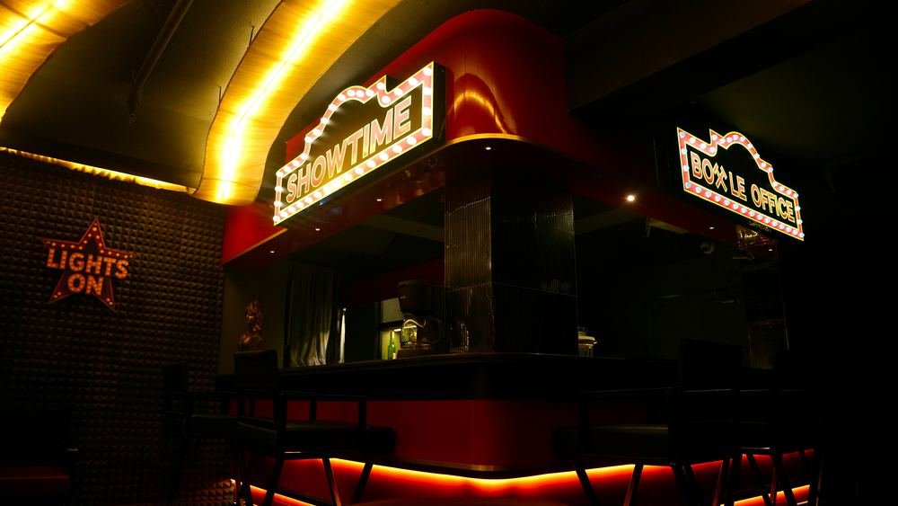
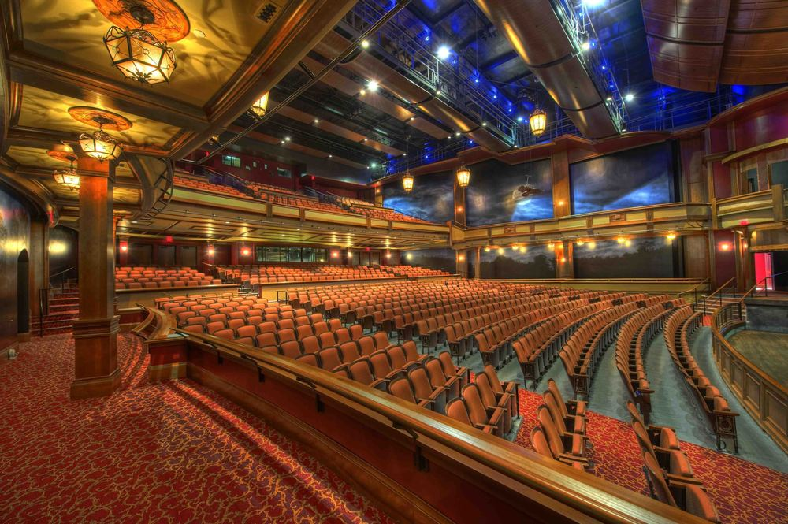
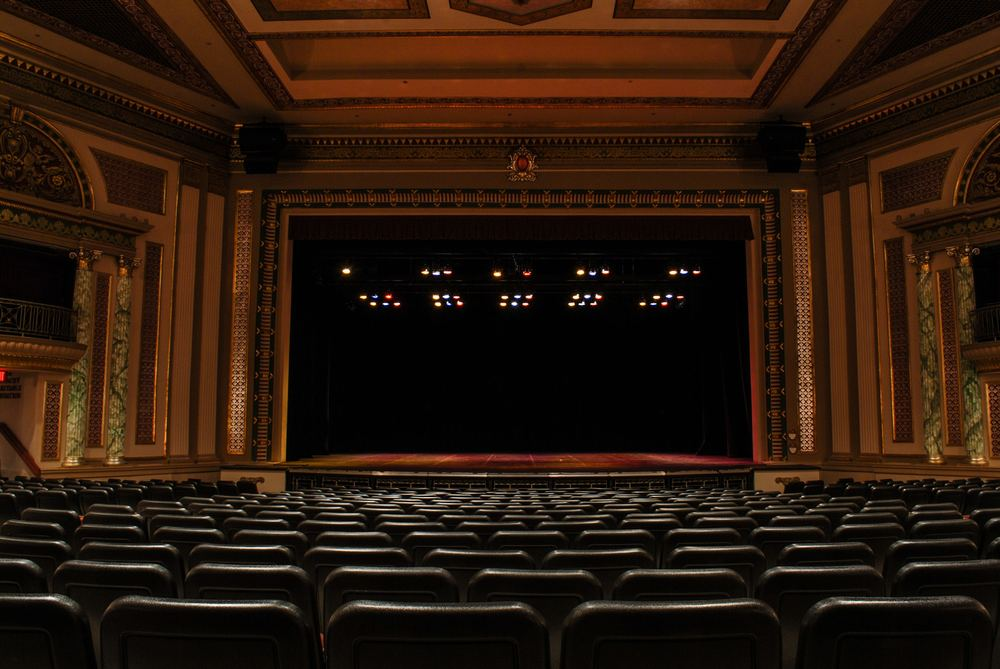

One of the Inbetween's recreational spots, with only two showings a day — one in the morning, one in the evening — and open for general use the rest of the time. Nothing is ever posted about what's actually playing except its genre, which is part of the mystery. In truth, the theatre's employees are each quietly handed a single memory from a resident of the Inbetween to dramatize for the stage — sometimes played for laughs, sometimes played uncomfortably close to the bone. Residents occasionally find themselves watching their own memory performed back at them, and don't always leave in better spirits than they arrived. When that happens, they're pointed toward The Replay next door.